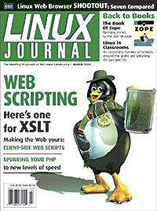

Shutdown Archive web server
Search:
Linux Journal
Issue #95/March 2002

Features
XSLT Powers a New Wave of Web Applications
by Cameron Laird
Cameron explains the mysteries of XSLT and its multiple uses.
Client-Side Web Scripting
by Marco Fioretti
Personalize your web experience with a little Perl.
Improving the Speed of PHP Web Scripts
by Bruno Pedro
Discover what's holding back your PHP scripts and set them free.
Indepth
Ruby
by Thomas Østerlie
The pluses of the scripting language taking Japan by storm.
Browser Comparison
by Ralph Krause
A look at the strengths and weaknesses of seven web browsers.
Toolbox
Take Command
Configuring pppd in Linux, Part II
by Tony Mobily
Kernel Korner
Inside the Linux Packet Filter, Part II
by Gianluca Insolvibile
At the Forge
Zope Products
by Reuven M. Lerner
Cooking with Linux
Scriptwriting for ze Web and Everywhere Else
by Marcel Gagné
GFX Film GIMP at Rhythm & Hues
by Robin Rowe
Linux in Education Putting Linux in Classrooms around the World
by John D. Biggs
Columns
Linux for Suits
Natural Forces
by Doc Searls
Focus on Software
Seven Kernerls on Five Systems
by David A. Bandel
Focus on Embedded Systems
Bully in the (Embedded) Playground
by Rick Lehrbaum
Geek Law: Unbiased License FUD
by Lawrence Rosen
Reviews
The Book of Zope
by Reuven M. Lerner
Departments
Letters
upFRONT
From the Editor
SPAM, Not Spam, Is the Stuff of Memories
by Richard Vernon
Best of Technical Support
New Products
Archive Index
Shutdown Archive web server
Search:
Copyright © 1994 - 2018
Linux Journal
. All rights reserved.